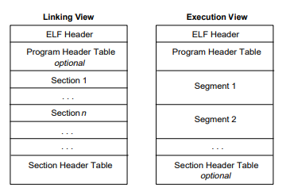
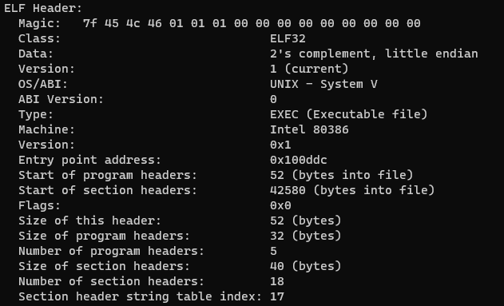
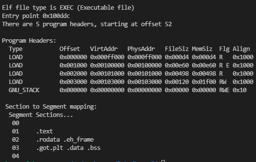

加载ELF
回顾lab1
在lab1中，我们说过，不管是ELF格式，还是EXE格式，这些格式的文件是为了提供关于程序尽可能多的信息，方便我们解析并加载到CPU上。所以，我们的实验也可以把Kernel和用户程序编译成各种不同的文件格式（比如exe，elf，macho......），甚至你可以自己发明一种文件格式和相应的编译器！
但是在这里，我们为了和ICS进行衔接，所以采用ELF文件格式，通过解析ELF文件，把Kernel和用户程序加载到内存中！
回顾ELF格式
ELF（Executable Linkable Format，可执行可链接格式）文件是一种文件格式，在Linux系统上的目标文件都遵守这个格式。
下面是ELF的基本结构图：

链接视图和执行视图
左边是链接视图（Linkable），右边是执行视图（Executable）。链接视图是以节（section）为单位，执行视图是以段（segment）为单位的。链接视图就是在链接时用到的视图，而执行视图则是在执行时用到的视图。
在链接过程中，链接器会把不同的.o文件中的相同类型的section处理成一个segment。比如你要将多个.o文件链接起来，每个文件都会有.text这个节，链接时就会把这些.text节里面的地址重定向，变成.text段（如果还是想不起来，请回头看看ICS学过的内容）。
在链接过后，ELF文件会变成执行视图。这时，该ELF文件就可以被加载运行。
执行视图的结构
因为我们的任务是加载Kernel和用户程序来运行，所以忽略链接视图，感兴趣的同学可以从下面的参考资料去了解。
ELF文件的执行视图主要由三个部分构成：
- ELF头（ELF header）
- 程序头表（Program Header Table）
- 各个段（segment）
ELF头
ELF头在文件的最开始部分，用于找到ELF文件的其他部分，并且提供有关ELF文件的相关信息。
使用如下命令可以读取ELF头：
$ readelf -h xxx
让我们随便找一个ELF可执行文件看看ELF头。

这其中的各个条目，实际上可以构成一个结构体（请查看bootloader/boot.h文件）：
struct ELFHeader {
unsigned int magic; //魔数，上图Magic的前四个字节
unsigned char elf[12]; //包含上图Class，Data，Version......（可忽略）
unsigned short type; //目标文件类型，可执行还是可链接
unsigned short machine; //文件的目标体系结构类型，比如80386
unsigned int version; //目标文件版本
unsigned int entry; //程序入口（重要！）
unsigned int phoff; //程序头表偏移量
unsigned int shoff; //节头表偏移量（执行视图可忽略）
unsigned int flags; //处理器相关表示
unsigned short ehsize; //ELF头的大小（数一数，刚好52字节）
unsigned short phentsize; //程序头表中每个表项的大小（一般固定32字节，重要！）
unsigned short phnum; //程序头表的表项数目，上图中为5个，说明五个段（重要！）
unsigned short shentsize; //节头表中每个表项的大小（执行视图可忽略）
unsigned short shnum; //节头表中表项数目（执行视图可忽略）
unsigned short shstrndx; //（忽略）
};
每个条目在固定的位置，所以可以通过结构体来进行解析。
其中比较重要的是跟程序头表有关的内容！！！
程序头表
程序头表(Program header table) 列举了所有有效的段和他们的属性（执行视图）。
每一个段（比如.text，.data......）对应了一个程序头表项，表项里面包含了这些段的信息。如下图：

同样，我们可以在boot.h文件里找到程序头表表项对应的结构体：
struct ProgramHeader {
unsigned int type;
unsigned int off;
unsigned int vaddr;
unsigned int paddr;
unsigned int filesz;
unsigned int memsz;
unsigned int flags;
unsigned int align;
};
其中，type为LOAD的段，需要被加载到内存里去。它相对于ELF起始位置的偏移量是off，应当被加载到PhysAddr的物理内存中去。文件的大小是filesz，在内存中占据的大小是memsz。
那么装载一个ELF可执行文件的过程就是：
- 先通过readSect函数把ELF文件整体读入固定的位置。
- 找到ELF可执行文件的ELF头。
- 通过ELF可执行文件的头，找到程序头表的位置，并获知表项的多少（实际上程序头表就是个结构数组）。
- 将type为LOAD的段装载到合适的位置上去。（注意，不要覆盖掉还未装载的段所占据的内存！！！）
exercise3：请自行查阅读取程序头表的指令，然后自行找一个ELF可执行文件，读出程序头表并进行适当解释（简单说明即可）。
在实验的后面，我将会提出一个非常奇怪的问题做challenge，来检测大家对ELF基础知识的掌握程度（可选，做不出来不扣分！）。🤣
参考资料
对ELF格式感兴趣（或想了解）的同学可以参考ELF Specification。